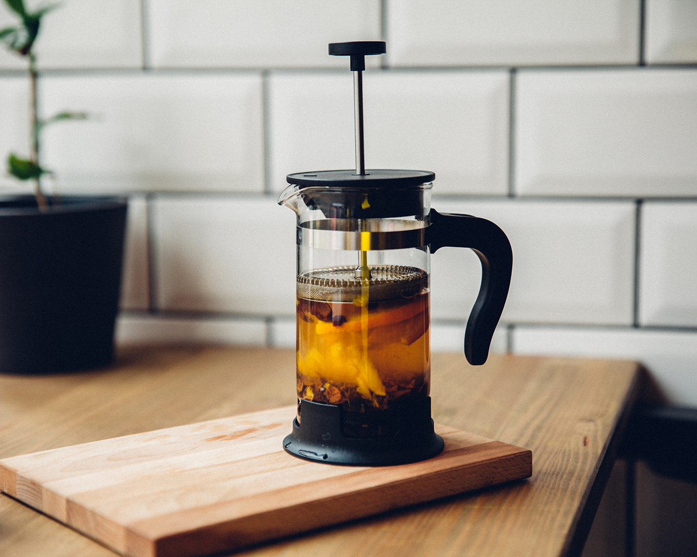

French Press Coffee

Description
A cylindrical pot with a plunger and built-in filter screen that presses hot water through ground coffee: that’s the simple beauty of the French press, method of choice for many all over the world, creating an earthy, rich taste in your daily cup of coffee.
The secret is all in the grind: choose medium, with uniformity and consistency throughout. Very coarse grinds may clog the filter, while very fine grinds will pass through the filter, muddying the results.
Steps
- Place the pot on a dry, flat surface. Hold the handle firmly, then pull out the plunger
- Add a heaping tablespoon (7-8 grams) of coffee to the pot per 200 ml (6.7 oz) of water
- Pour hot water—not quite boiling—into the pot, and gently stir
- Carefully reinsert the plunger into the pot, stopping just above the water and ground coffee (do not plunge yet), and let stand for 3-4 minutes
- Press the plunger down slowly, exerting steady pressure
- After each use, wash the pot with water and mild detergent, and dry thoroughly
Back to main page